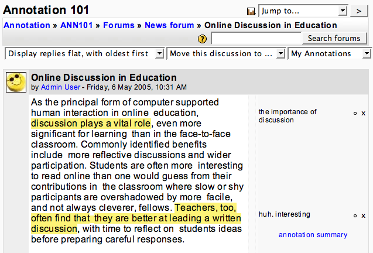

This describes the features available when the annotation feature is installed on your Moodle system. In order for annotation to work, you must be using Firefox or Internet Explorer. Older versions of Internet Explorer may not work. If you're using another browser, you will be unable to create annotations, although you may be able to view them.
While viewing a discussion forum, annotations can be displayed or hidden. When they're hidden, the form appears as normal. When they are shown, an annotation margin is added to the right of each message. Any annotations are displayed in this margin, similar to scribbled notes in the margin of a book. Each annotation is associated with text in the body of the post; this text is highlighted. If the annotation belongs to you, the highlight is yellow; if it's someone else's, it is blue. (It is possible these colors will be different on your system.) Here's a screenshot:
There's a drop-down list in the upper right of the page. When you first view the discussion forum, the list will say "Hide Annotations". In order to start annotating, you must select "My Annotations" from the list (as in the screenshot). This will display any annotations you have created on this page. The list may also include the names of other users. Selecting a name from the list will display annotations by that user. If a user doesn't have any annotations on this page, his or her name will not be present in the list.
Notice that when you hover the mouse over an area of highlighted text the text will light up along with any associated note in the margin. If you hover over the note in the margin, it will light up along with the associated highlighted text. This is useful for determining which note associates with which highlight (they may not be next to each other if you have many notes together), and also to distinguish highlights if they overlap.
To create an annotation, use the mouse to select a range of text in the content of a post. Then click the create annotation button in the annotation margin. This button is marked with very faint lines so that it won't clutter the display, but on Firefox it lights up in bright yellow (the annotation highlight color) when the mouse is over it. It extends the full height of the post content between the content and the area where margin notes are shown. Alternatively, instead of clicking the button, you can press the Enter key on the keyboard to create an annotation.
Once you click the button or type Enter, a box will appear in the annotation margin to the right of the text you selected. There's a text editing cursor in the box. If you want to associate a margin note with your highlighted passage, just start typing text here. When you're done, click outside the edit box or press Enter. The box will disappear, but the text will remain, along with a couple of icons to the right. The x deletes the annotation; the circle (or diamond) allows you to decide whether the annotation is to be public (in which case anyone can see it) or private (only you can see it), respectively. At this point, your annotation is already saved and will be here next time you return to the page.
To edit an annotation, simply click on the text in the annotation margin. When you're finished editing, click elswhere or type Enter. There is no way to change the highlight area - if you need to do this, create a new annotation instead.
To delete an annotation, click the small x next to the annotation text in the annotation margin. There is no undo feature, so be certain you want to delete the annotation. (This emphasizes that annotations are not intended to be novels - if a stray click could delete your annotation perhaps you should consider keeping your information somewhere else. There is, incidentally, no way to delete all annotations at once, so don't worry if you have lots of annotations, just if they're individually very long.)
By default, annotations are public. This is indicated by a small circle in the margin next to the x that deletes the annotation. This means that anyone can view your annotation. In theory, this could include people outside the course, although in practice there is no easy way for them to do this. If you want to keep an annotation private, you can click on the circle to turn it into a diamond. The diamond indicates the annotation is private. Then no-one can see the annotation, either here or on the summary page.
There's an annotation summary link in each post's margin. Clicking this takes you to the summary page, which displays a summary of annotations and highlighted passages. You can also use the summary to view annotations for a whole course, or to search for annotations matching specific criteria.
There is a tricky scenario which can occur. Someone could change a post after you have annotated it. In this case, the annotation software may be unable to locate the text you highlighted when you created the annotation. If this is the case, the annotation will not be shown (this could include all of your annotations for that post). In Firefox, an exclamation mark in a red box will appear in the annotation margin to indicate the problem. Clicking on this will take you to the summary page, which will display the full annotations. You may then want to re-create them on the discussion page.
Note that annotations cannot be deleted by anyone but you (well, they are also deleted if your user is deleted from Moodle). They will not be deleted even if someone deletes an annotated post, or even the entire discussion forum. You should still be able to get at your annotations through the summary page.
The annotation summary page displays a table of annotations. This table includes several items of information:
These fields should all be self-explanatory when viewing the summary page. The links to the discussion and individual post both work. If you're looking at someone else's annotation, clicking on that person's name will take you back to the discussion and show you the annotated post with that person's annotations showing.
There is also a link at the bottom of the summary page which allows you to view all annotations for the course. It obeys any search criteria you have selected (see below).
The main feature of the summary page is the search feature. This allows you to search for annotations containing particular text, to filter according to whether the annotated content (post) was created by you, and to view only annotations by yourself, students, or teachers.
The search controls are across the top, and perform as described above; I believe they are self-explanatory. The field for typing in text is a little bit more complex, however. Any text here is broken into words. Then a search is done of all annotations to find ones containing the text. The search includes the following fields of each annotation:
You may also see a button labeled Atom at the bottom of the page. If you have a feed reader (otherwise known as a news reader, RSS client, blog reader, etc.) you can subscribe to annotations matching the summary you are viewing now (including all search criteria). This subscription will only include public annotations; even your own private annotations will not be included.
Smartcopy is a feature which includes context when you copy and paste from forum pages. To use it, all you need to do is select some text in the body of a post by clicking and dragging the mouse (it will not work if you use another mechanism to select text), then copy the text. You can paste it anywhere, including other applications. The title, date, and author of the post will be included. Depending on the application into which you paste, a link to this post may also be included, although it may not work if that application is outside Moodle.
This feature is intended to make it easy to reference other posts when quoting from them.